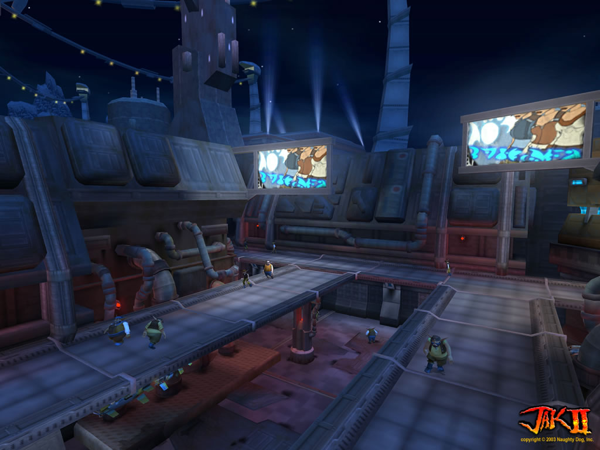

Hello and welcome
to my website.
I'm Boomer and I'm a Speedrunner of PlayStation games. In 2015, I first started streaming the Jak and Daxter series and since then, that's what I'm mostly known for. Have fun and enjoy your stay!

Twitch, YouTube and other social media.
I appreciate being in contact with my followers and viewers. If you have any questions, you can always reach out to me on one of the following sites or via E-Mail.
Have you attended any on-site Speedrunning events or participated in any marathons?
Yes, I have! YouTube links to the runs can be found right below.
- Jak II Any% Race @ ESA 2016
- Jak Trifecta Any% Race @ ESA Germany 2017
- Ratchet & Clank Any% @ ESA Germany 2017
- Quake 100m @ ESA Germany 2017 (Bonus Stream)
- Jak and Daxter Any% (No LTS) for Degen Dash II
- Jak II Any% Race for Degen Dash II
- Jak 3 Any% Hero Mode for Degen Dash 3

How do you create your Twitch streams?
What hardware are you using?
| Processor | AMD Ryzen 7 1700X @ 3850 MHz, 1.38 V |
| Graphics Card | GTX 1080 G1 Gaming 8G @ 2 GHz |
| Microphone & Interface | AKG-D5 paired with a Behringer Xenyx Q502 USB |
| Capture Card | Elgato Game Capture HD 60 Pro |
© Untitled. Design: HTML5 UP.